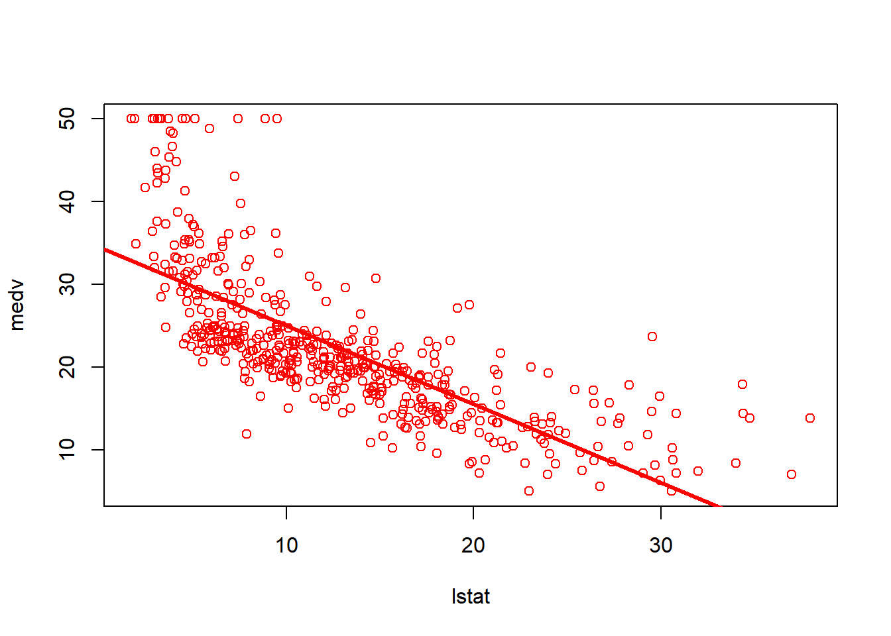
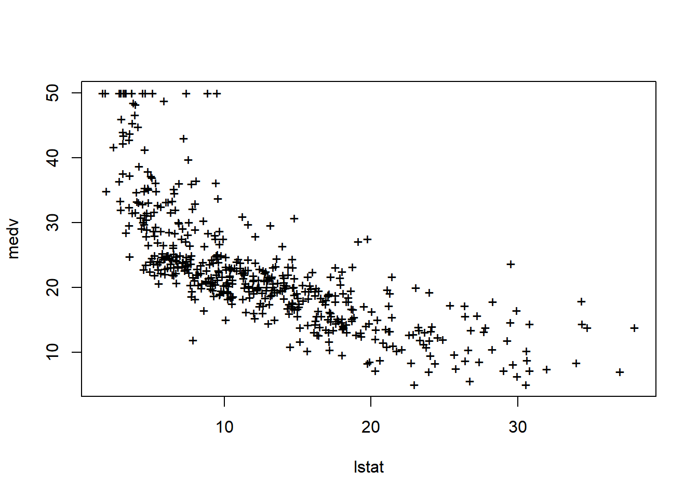
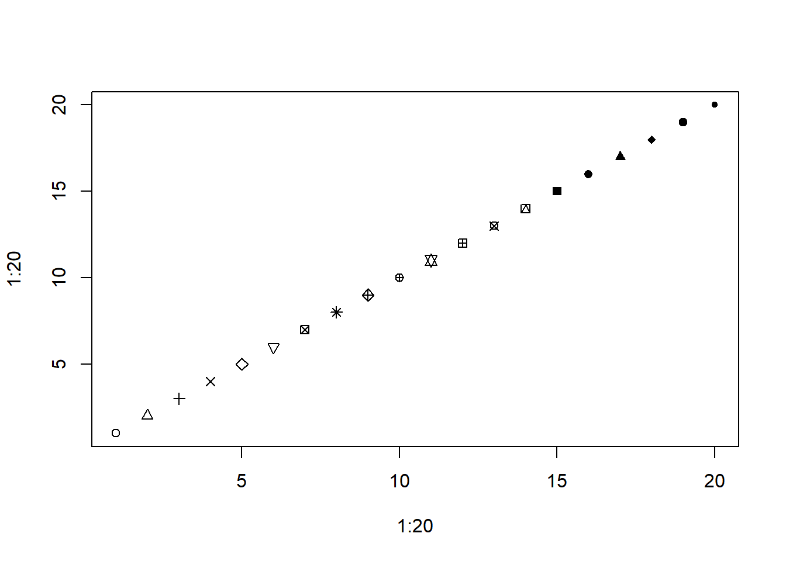
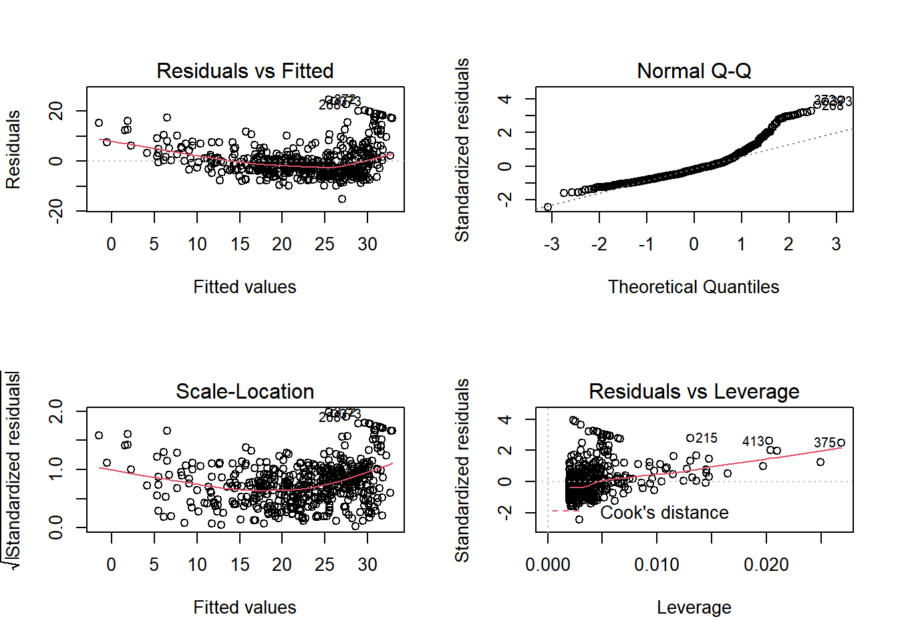
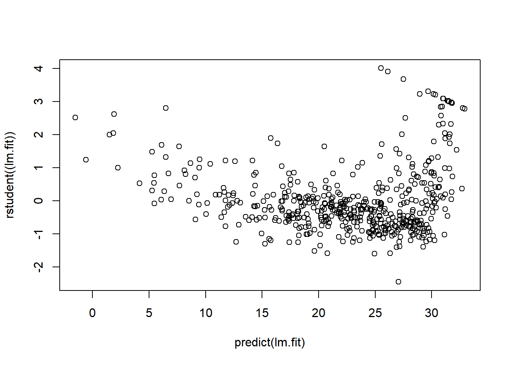
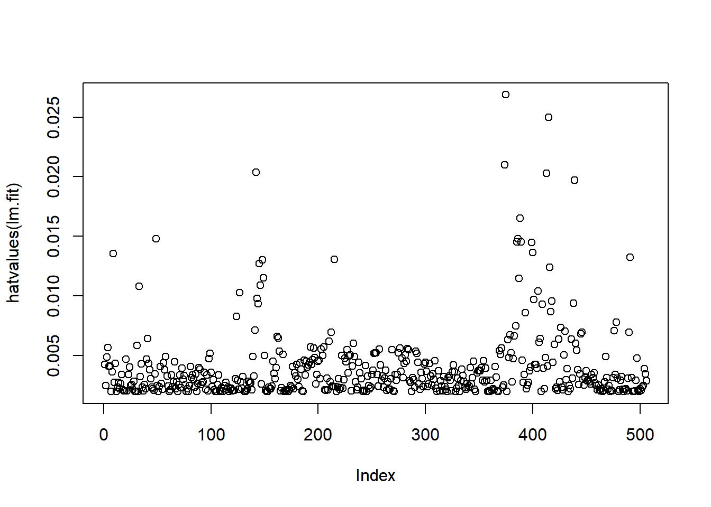
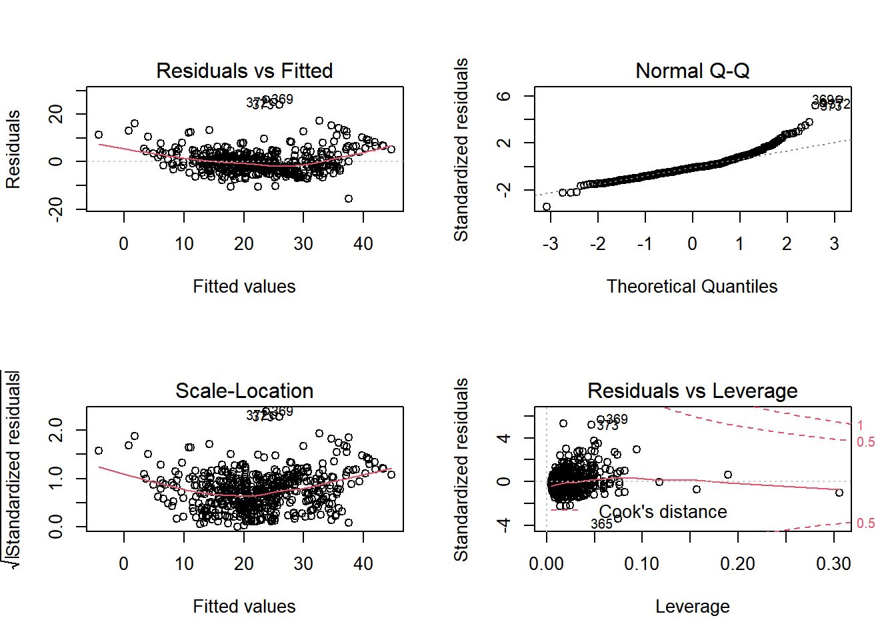

R线性回归
Boylad · 2018-12-01
线性回归
MASS库中包含Boston(波士顿房价)数据集，它记录了波士顿周围506个街区的medv(房价中位数)。我们将设法用13个预测变量如rm(每栋住宅的平均房间数)，age(平均房龄)，lstat(社会经济地位低的家庭所占比例)等来预测medv(房价中位数)。要了解关于此数据集的更多信息，可以输入?Boston。
library(MASS)
library(ISLR)
attach(Boston)
names(Boston)
## [1] "crim" "zn" "indus" "chas" "nox" "rm" "age"
## [8] "dis" "rad" "tax" "ptratio" "black" "lstat" "medv"用lm()函数拟合一个简单线性回归模型，将lstat作为预测变量，medv作为响应变量。
lm.fit <- lm(medv~lstat, data = Boston)
lm.fit
##
## Call:
## lm(formula = medv ~ lstat, data = Boston)
##
## Coefficients:
## (Intercept) lstat
## 34.55 -0.95
summary(lm.fit)
##
## Call:
## lm(formula = medv ~ lstat, data = Boston)
##
## Residuals:
## Min 1Q Median 3Q Max
## -15.168 -3.990 -1.318 2.034 24.500
##
## Coefficients:
## Estimate Std. Error t value Pr(>|t|)
## (Intercept) 34.55384 0.56263 61.41 <2e-16 ***
## lstat -0.95005 0.03873 -24.53 <2e-16 ***
## ---
## Signif. codes: 0 '***' 0.001 '**' 0.01 '*' 0.05 '.' 0.1 ' ' 1
##
## Residual standard error: 6.216 on 504 degrees of freedom
## Multiple R-squared: 0.5441, Adjusted R-squared: 0.5432
## F-statistic: 601.6 on 1 and 504 DF, p-value: < 2.2e-16可以使用names()函数找出lm.fit中存储的其他信息。虽然可以用名称提取这些信息量——例如：lm.fit$coefficients——但用提取功能如coef()访问他们会更安全。
names(lm.fit)
## [1] "coefficients" "residuals" "effects" "rank"
## [5] "fitted.values" "assign" "qr" "df.residual"
## [9] "xlevels" "call" "terms" "model"
coef(lm.fit)
## (Intercept) lstat
## 34.5538409 -0.9500494为了得到系数估计值的置信区间，可以使用confint()命令。
confint(lm.fit)
## 2.5 % 97.5 %
## (Intercept) 33.448457 35.6592247
## lstat -1.026148 -0.8739505在根据给定lstat的值预测medv时，predict()函数可以计算置信区间和预测区间。
predict(lm.fit, data.frame(lstat = (c(5, 10, 15))), interval = "confidence")
## fit lwr upr
## 1 29.80359 29.00741 30.59978
## 2 25.05335 24.47413 25.63256
## 3 20.30310 19.73159 20.87461
predict(lm.fit, data.frame(lstat = (c(5, 10, 15))), interval = "prediction")
## fit lwr upr
## 1 29.80359 17.565675 42.04151
## 2 25.05335 12.827626 37.27907
## 3 20.30310 8.077742 32.52846例如当lstat值时，相应的95%置信区间为(24.47, 25.63)，相应的95%预测区间为(12828, 37.28)。正如预期的那样，置信区间和预测区间有相同的中心点(当lstat等于10时，medv的预测值是25.05),但后者要宽得多。
现在用函数plot()和abline()绘制lstat的散点图以及最小二乘回归直线。
plot(lstat, medv)
abline(lm.fit)abline()函数可以用来绘制任意直线，而不只是最小二乘回归直线，输入abline(a,b)可画一条截距为a,斜率为b的直线。下面尝试一些用于绘制点和线的附加设置。lwd=3，命令将使回归直线的宽度增加3倍，这一设置在plot()和abline()函数中也可使用。我们还可以用pch选项创建不同的图形符号。
plot(lstat, medv, col = "red")
abline(lm.fit, lwd = 3, col = "red")
plot(lstat, medv, pch = 20)plot(lstat, medv, pch = "+")
plot(1:20, 1:20, pch = 1:20)
接下来我们检查一些诊断图。对lm()的输出直接用plot()命令将自动生成四幅诊断图。一般情况下，这个命令每次生成一幅图，在Conslole里按下回车键(Enter)将生成下一幅图。然而，同时查看所有四幅图通常比较方便。可以用par()函数做到这一点，它指示R将显示屏分割成独立的面板，所以可以同时查看多个图。例如，par(mfrow = c(2,2))把绘图区域划分成\(2\times 2\)的网格面板。
par(mfrow = c(2, 2))
plot(lm.fit)
也可以使用residuals()函数计算线性回归拟合的残差。函数rstudent()可以计算学生化残差，我们也可以用这个函数绘制残差对拟合值的散点图。
plot(predict(lm.fit), residuals((lm.fit)))plot(predict(lm.fit), rstudent((lm.fit)))
残差图中的一些证据表明数据有非线性。杠杆统计量可以由hatvalues()函数为任意多个预测变量来计算。which.max()函数可识别出向量中最大元素的索引。
plot(hatvalues(lm.fit))
which.max(hatvalues(lm.fit))
## 375
## 375多元线性回归
为了用最小二乘法拟合多元线性回归模型，再次调用lm()函数，语句lm(y~x1+x2+x3)用于建立有三个预测变量x1、x2和x3的拟合模型。summary()函数输出所有预测变量的回归系数。
lm.fit <- lm(medv ~ lstat + age, data = Boston)
summary(lm.fit)
##
## Call:
## lm(formula = medv ~ lstat + age, data = Boston)
##
## Residuals:
## Min 1Q Median 3Q Max
## -15.981 -3.978 -1.283 1.968 23.158
##
## Coefficients:
## Estimate Std. Error t value Pr(>|t|)
## (Intercept) 33.22276 0.73085 45.458 < 2e-16 ***
## lstat -1.03207 0.04819 -21.416 < 2e-16 ***
## age 0.03454 0.01223 2.826 0.00491 **
## ---
## Signif. codes: 0 '***' 0.001 '**' 0.01 '*' 0.05 '.' 0.1 ' ' 1
##
## Residual standard error: 6.173 on 503 degrees of freedom
## Multiple R-squared: 0.5513, Adjusted R-squared: 0.5495
## F-statistic: 309 on 2 and 503 DF, p-value: < 2.2e-16Boston数据集包含13个变量，所以在用所有的预测变量进行回归时，一一输入会很麻烦。可以使用下面的快捷方法：
lm.fit <- lm(medv ~ ., data = Boston)
summary(lm.fit)
##
## Call:
## lm(formula = medv ~ ., data = Boston)
##
## Residuals:
## Min 1Q Median 3Q Max
## -15.595 -2.730 -0.518 1.777 26.199
##
## Coefficients:
## Estimate Std. Error t value Pr(>|t|)
## (Intercept) 3.646e+01 5.103e+00 7.144 3.28e-12 ***
## crim -1.080e-01 3.286e-02 -3.287 0.001087 **
## zn 4.642e-02 1.373e-02 3.382 0.000778 ***
## indus 2.056e-02 6.150e-02 0.334 0.738288
## chas 2.687e+00 8.616e-01 3.118 0.001925 **
## nox -1.777e+01 3.820e+00 -4.651 4.25e-06 ***
## rm 3.810e+00 4.179e-01 9.116 < 2e-16 ***
## age 6.922e-04 1.321e-02 0.052 0.958229
## dis -1.476e+00 1.995e-01 -7.398 6.01e-13 ***
## rad 3.060e-01 6.635e-02 4.613 5.07e-06 ***
## tax -1.233e-02 3.760e-03 -3.280 0.001112 **
## ptratio -9.527e-01 1.308e-01 -7.283 1.31e-12 ***
## black 9.312e-03 2.686e-03 3.467 0.000573 ***
## lstat -5.248e-01 5.072e-02 -10.347 < 2e-16 ***
## ---
## Signif. codes: 0 '***' 0.001 '**' 0.01 '*' 0.05 '.' 0.1 ' ' 1
##
## Residual standard error: 4.745 on 492 degrees of freedom
## Multiple R-squared: 0.7406, Adjusted R-squared: 0.7338
## F-statistic: 108.1 on 13 and 492 DF, p-value: < 2.2e-16可以用它们的名字访问summary的各个组成部分(输入?summary.lm查看可用项)。因此，summary(lm.fit)$r.sq课输出\(R^2\)，summary(lm.fit)$sigma可给出出RSE。
vif()函数是car包的一部分，可用于计算方差膨胀因子。此数据集中大多数变量的VIF值是低到中等。
library(car)
## 载入需要的程辑包：carData
vif(lm.fit)
## crim zn indus chas nox rm age dis
## 1.792192 2.298758 3.991596 1.073995 4.393720 1.933744 3.100826 3.955945
## rad tax ptratio black lstat
## 7.484496 9.008554 1.799084 1.348521 2.941491在上面的回归结果中，age变量有很高的p值。所以我们不妨进行不包括年龄变量的回归。
lm.fit1 <- lm(medv ~. - age, data = Boston)
summary(lm.fit1)
##
## Call:
## lm(formula = medv ~ . - age, data = Boston)
##
## Residuals:
## Min 1Q Median 3Q Max
## -15.6054 -2.7313 -0.5188 1.7601 26.2243
##
## Coefficients:
## Estimate Std. Error t value Pr(>|t|)
## (Intercept) 36.436927 5.080119 7.172 2.72e-12 ***
## crim -0.108006 0.032832 -3.290 0.001075 **
## zn 0.046334 0.013613 3.404 0.000719 ***
## indus 0.020562 0.061433 0.335 0.737989
## chas 2.689026 0.859598 3.128 0.001863 **
## nox -17.713540 3.679308 -4.814 1.97e-06 ***
## rm 3.814394 0.408480 9.338 < 2e-16 ***
## dis -1.478612 0.190611 -7.757 5.03e-14 ***
## rad 0.305786 0.066089 4.627 4.75e-06 ***
## tax -0.012329 0.003755 -3.283 0.001099 **
## ptratio -0.952211 0.130294 -7.308 1.10e-12 ***
## black 0.009321 0.002678 3.481 0.000544 ***
## lstat -0.523852 0.047625 -10.999 < 2e-16 ***
## ---
## Signif. codes: 0 '***' 0.001 '**' 0.01 '*' 0.05 '.' 0.1 ' ' 1
##
## Residual standard error: 4.74 on 493 degrees of freedom
## Multiple R-squared: 0.7406, Adjusted R-squared: 0.7343
## F-statistic: 117.3 on 12 and 493 DF, p-value: < 2.2e-16或者使用update()函数：
lm.fit2 <- update(lm.fit, ~. - age)
summary(lm.fit2)
##
## Call:
## lm(formula = medv ~ crim + zn + indus + chas + nox + rm + dis +
## rad + tax + ptratio + black + lstat, data = Boston)
##
## Residuals:
## Min 1Q Median 3Q Max
## -15.6054 -2.7313 -0.5188 1.7601 26.2243
##
## Coefficients:
## Estimate Std. Error t value Pr(>|t|)
## (Intercept) 36.436927 5.080119 7.172 2.72e-12 ***
## crim -0.108006 0.032832 -3.290 0.001075 **
## zn 0.046334 0.013613 3.404 0.000719 ***
## indus 0.020562 0.061433 0.335 0.737989
## chas 2.689026 0.859598 3.128 0.001863 **
## nox -17.713540 3.679308 -4.814 1.97e-06 ***
## rm 3.814394 0.408480 9.338 < 2e-16 ***
## dis -1.478612 0.190611 -7.757 5.03e-14 ***
## rad 0.305786 0.066089 4.627 4.75e-06 ***
## tax -0.012329 0.003755 -3.283 0.001099 **
## ptratio -0.952211 0.130294 -7.308 1.10e-12 ***
## black 0.009321 0.002678 3.481 0.000544 ***
## lstat -0.523852 0.047625 -10.999 < 2e-16 ***
## ---
## Signif. codes: 0 '***' 0.001 '**' 0.01 '*' 0.05 '.' 0.1 ' ' 1
##
## Residual standard error: 4.74 on 493 degrees of freedom
## Multiple R-squared: 0.7406, Adjusted R-squared: 0.7343
## F-statistic: 117.3 on 12 and 493 DF, p-value: < 2.2e-16交互项
用lm()函数使线性模型包括交互项是很容易的。语句lstat:black命令R将lstat和black的交互项纳入模型。语句，lstat*age将lstat，age和交互项lstat\(\times\)age同时作为预测变量，它是lstat + age + lstat : age的简写形式。
summary(lm(medv ~ lstat * age, data = Boston))
##
## Call:
## lm(formula = medv ~ lstat * age, data = Boston)
##
## Residuals:
## Min 1Q Median 3Q Max
## -15.806 -4.045 -1.333 2.085 27.552
##
## Coefficients:
## Estimate Std. Error t value Pr(>|t|)
## (Intercept) 36.0885359 1.4698355 24.553 < 2e-16 ***
## lstat -1.3921168 0.1674555 -8.313 8.78e-16 ***
## age -0.0007209 0.0198792 -0.036 0.9711
## lstat:age 0.0041560 0.0018518 2.244 0.0252 *
## ---
## Signif. codes: 0 '***' 0.001 '**' 0.01 '*' 0.05 '.' 0.1 ' ' 1
##
## Residual standard error: 6.149 on 502 degrees of freedom
## Multiple R-squared: 0.5557, Adjusted R-squared: 0.5531
## F-statistic: 209.3 on 3 and 502 DF, p-value: < 2.2e-16预测变量的非线性变换
lm()函数也可以容纳预测变量的非线性变换。例如，给定预测变量X，我们可以用I（X^2)创建预测变量\(X^2\)。函数I()是必要的，因为^在公式中有特殊的含义；这是R软件里把X转换成其二次方的标准方法。现在建立medv对lstat和lstat\(^2\)的回归。
lm.fit3 <- lm(medv ~ lstat + I(lstat ^ 2))
summary(lm.fit3)
##
## Call:
## lm(formula = medv ~ lstat + I(lstat^2))
##
## Residuals:
## Min 1Q Median 3Q Max
## -15.2834 -3.8313 -0.5295 2.3095 25.4148
##
## Coefficients:
## Estimate Std. Error t value Pr(>|t|)
## (Intercept) 42.862007 0.872084 49.15 <2e-16 ***
## lstat -2.332821 0.123803 -18.84 <2e-16 ***
## I(lstat^2) 0.043547 0.003745 11.63 <2e-16 ***
## ---
## Signif. codes: 0 '***' 0.001 '**' 0.01 '*' 0.05 '.' 0.1 ' ' 1
##
## Residual standard error: 5.524 on 503 degrees of freedom
## Multiple R-squared: 0.6407, Adjusted R-squared: 0.6393
## F-statistic: 448.5 on 2 and 503 DF, p-value: < 2.2e-16二次项的p值接近零表明它使模型得到了改进。我们用anova()函数进一步量化二次拟合在何种程度上优于线性拟合。
lm.fit <- lm(medv~lstat)
anova(lm.fit, lm.fit3)
## Analysis of Variance Table
##
## Model 1: medv ~ lstat
## Model 2: medv ~ lstat + I(lstat^2)
## Res.Df RSS Df Sum of Sq F Pr(>F)
## 1 504 19472
## 2 503 15347 1 4125.1 135.2 < 2.2e-16 ***
## ---
## Signif. codes: 0 '***' 0.001 '**' 0.01 '*' 0.05 '.' 0.1 ' ' 1这里的模型1代表只包含一个预测变量lstat的线性子模型，模型2则对应具有两个预测变量lstath和lstat\(^2\)的二次模型。anova()函数通过假设检验比较两个模型。零假设是这两个模型对数据的拟合同样出色，备择假设是全模型更优。这里的F统计量是135，相应的p值几乎为零。这提供了非常明确的证据表明预测变量lstat和lstat\(^2\)的模型远远优于只包含预测变量lstat的模型。这并不奇怪，因为之间我们看到了medv和lstat之间有非线性关系的证据。如果我们输入：
par(mfrow = c(2,2))
plot(lm.fit2)
就可以看到当模型包含lstat\(^2\)时，残差中可识别的规律很少。
要创建一个三次拟合我们可以向模型中加入一个形如I(X\(^3\))的预测变量。然而，这种方法对于高阶多项式就会变得繁琐。更好的方法是用poly()和lm()函数创建多项式。例如，下面的命令会产生一个5阶多项式拟合。
lm.fit5 <- lm(medv ~ poly(lstat, 6))
summary(lm.fit5)
##
## Call:
## lm(formula = medv ~ poly(lstat, 6))
##
## Residuals:
## Min 1Q Median 3Q Max
## -14.7317 -3.1571 -0.6941 2.0756 26.8994
##
## Coefficients:
## Estimate Std. Error t value Pr(>|t|)
## (Intercept) 22.5328 0.2317 97.252 < 2e-16 ***
## poly(lstat, 6)1 -152.4595 5.2119 -29.252 < 2e-16 ***
## poly(lstat, 6)2 64.2272 5.2119 12.323 < 2e-16 ***
## poly(lstat, 6)3 -27.0511 5.2119 -5.190 3.06e-07 ***
## poly(lstat, 6)4 25.4517 5.2119 4.883 1.41e-06 ***
## poly(lstat, 6)5 -19.2524 5.2119 -3.694 0.000245 ***
## poly(lstat, 6)6 6.5088 5.2119 1.249 0.212313
## ---
## Signif. codes: 0 '***' 0.001 '**' 0.01 '*' 0.05 '.' 0.1 ' ' 1
##
## Residual standard error: 5.212 on 499 degrees of freedom
## Multiple R-squared: 0.6827, Adjusted R-squared: 0.6789
## F-statistic: 178.9 on 6 and 499 DF, p-value: < 2.2e-16这表明，在模型中加入5阶以下的多项式改善了模型拟合！然而，进一步考察数据表明，5阶以上的多项式在回归拟合中p值不显著。
当然，我们并非仅仅能对预测变量进行多项式变换。下面，我们尝试对数变换。
summary(lm(medv ~ log(rm), data = Boston))
##
## Call:
## lm(formula = medv ~ log(rm), data = Boston)
##
## Residuals:
## Min 1Q Median 3Q Max
## -19.487 -2.875 -0.104 2.837 39.816
##
## Coefficients:
## Estimate Std. Error t value Pr(>|t|)
## (Intercept) -76.488 5.028 -15.21 <2e-16 ***
## log(rm) 54.055 2.739 19.73 <2e-16 ***
## ---
## Signif. codes: 0 '***' 0.001 '**' 0.01 '*' 0.05 '.' 0.1 ' ' 1
##
## Residual standard error: 6.915 on 504 degrees of freedom
## Multiple R-squared: 0.4358, Adjusted R-squared: 0.4347
## F-statistic: 389.3 on 1 and 504 DF, p-value: < 2.2e-16定性预测变量
现在，我们将研究Carseats(汽车座椅)数据，它是ISLR库的一部分。我们试图根据一些预测变量预测400个地区的sales(儿童座椅销量)。
data(Carseats)
names(Carseats)
## [1] "Sales" "CompPrice" "Income" "Advertising" "Population"
## [6] "Price" "ShelveLoc" "Age" "Education" "Urban"
## [11] "US"Carseats数据含有定性预测变量，如ShelveLoc(每个地区搁架位置的质量指标)，即在每个地区汽车座椅在商店内的展示空间。预测变量ShelveLoc有三个可能的取值：坏(bad),中等(dedium),好(good)。给出定性变量如Shelveloc,R将自动生成虚拟变量。下面构建一个含有交互项的多元回归模型。
lm.fit <- lm(Sales ~ . + Income:Advertising + Price:Age, data = Carseats)
summary(lm.fit)
##
## Call:
## lm(formula = Sales ~ . + Income:Advertising + Price:Age, data = Carseats)
##
## Residuals:
## Min 1Q Median 3Q Max
## -2.9208 -0.7503 0.0177 0.6754 3.3413
##
## Coefficients:
## Estimate Std. Error t value Pr(>|t|)
## (Intercept) 6.5755654 1.0087470 6.519 2.22e-10 ***
## CompPrice 0.0929371 0.0041183 22.567 < 2e-16 ***
## Income 0.0108940 0.0026044 4.183 3.57e-05 ***
## Advertising 0.0702462 0.0226091 3.107 0.002030 **
## Population 0.0001592 0.0003679 0.433 0.665330
## Price -0.1008064 0.0074399 -13.549 < 2e-16 ***
## ShelveLocGood 4.8486762 0.1528378 31.724 < 2e-16 ***
## ShelveLocMedium 1.9532620 0.1257682 15.531 < 2e-16 ***
## Age -0.0579466 0.0159506 -3.633 0.000318 ***
## Education -0.0208525 0.0196131 -1.063 0.288361
## UrbanYes 0.1401597 0.1124019 1.247 0.213171
## USYes -0.1575571 0.1489234 -1.058 0.290729
## Income:Advertising 0.0007510 0.0002784 2.698 0.007290 **
## Price:Age 0.0001068 0.0001333 0.801 0.423812
## ---
## Signif. codes: 0 '***' 0.001 '**' 0.01 '*' 0.05 '.' 0.1 ' ' 1
##
## Residual standard error: 1.011 on 386 degrees of freedom
## Multiple R-squared: 0.8761, Adjusted R-squared: 0.8719
## F-statistic: 210 on 13 and 386 DF, p-value: < 2.2e-16contrasts()函数返回R虚拟变量的编码。使用?contrasts命令了解其他编码方式以及设置方法。
attach(Carseats)
contrasts(ShelveLoc)
## Good Medium
## Bad 0 0
## Good 1 0
## Medium 0 1R创建了一个虚拟变量ShelveLocGood，如果货架位置好，它的值为1，否则为0。R还创建了一个虚拟变量ShelveLocMeium，如果货架位置属于中等水平，它的值为1，否则为0。坏的搁置位置则对应两个虚拟变量均为0。在回归输出中，若变量ShelveLocGood的系数为正，则表明好的货架位置与高销售额相关(与坏位置相比)。若变量ShelveLocMedium的系数为较小的正值，则表明中等水平的货架位置的销量比坏位置高，但比好位置差。
以上内容整理自《An Introduction to Statistical Learning with Applications in R》